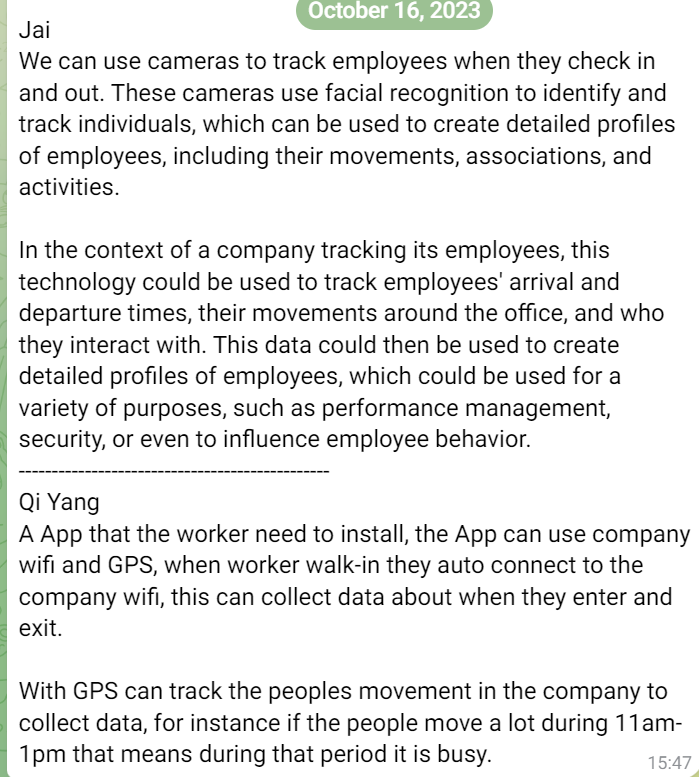
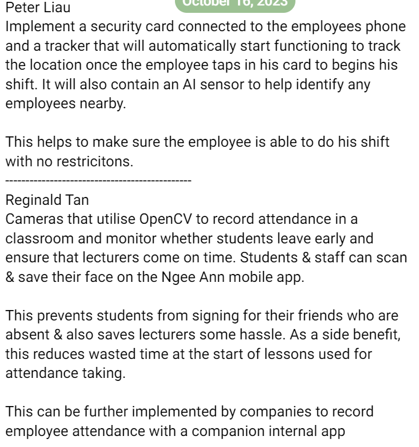
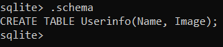

For week 1, I was very impressed with Mr Low's experience in Engineering and Programming where he told us about his time in ST Engineering creating the weapons and
coding the Moovita with Go in just 3 days. I thought of the problem statement, How would the data from some of these examples be collected,
collated, stored, retrieved, analyzed and some value be derived for use by the industry? and came up with a security card with OpenCV. I was being chosen as one of the
team leaders and chose my team members. After meeting my team, we collated our ideas with the below:
1. Implement a security card connected to the employees phone and a tracker that will automatically start functioning to track the location once the employee taps in his card to begins his shift. It will also contain an AI sensor to help identify any employees nearby.
This helps to make sure the employee is able to do his shift with no restricitons.
2. Cameras that utilise OpenCV to record attendance in a classroom and monitor whether students leave early and ensure that lecturers come on time. Students & staff can scan & save their face on the Ngee Ann mobile app.
This prevents students from signing for their friends who are absent & also saves lecturers some hassle. As a side benefit, this reduces wasted time at the start of lessons used for attendance taking.
This can be further implemented by companies to record employee attendance with a companion internal app.
3. We can use cameras to track employees when they check in and out. These cameras use facial recognition to identify and track individuals, which can be used to create detailed profiles of employees, including their movements, associations, and activities.
In the context of a company tracking its employees, this technology could be used to track employees' arrival and departure times, their movements around the office, and who they interact with. This data could then be used to create detailed profiles of employees,
which could be used for a variety of purposes, such as performance management, security, or even to influence employee behavior.
4. A App that the worker need to install, the App can use company wifi and GPS, when worker walk-in they auto connect to the company wifi, this can collect data about when they enter and exit.
With GPS can track the peoples movement in the company to collect data, for instance if the people move a lot during 11am-1pm that means during that period it is busy.
We decided on the second option as it is a fulfilling project to work on since it is unique compared to the other options and it is challenging enough for us.


For week 2, we reviewed the project and we decided to assign roles for each of our 4 members. We also added an inception deck, and discussed about the Elevator Pitch and Product Box in
Our main objective is to improve attendance taking by enhancing security and efficiency. We also decided on the product name which is FRATS,Facial Recognition Attendance Taking System,
and our slogan is Better implementation of Artificial Intelligence to everyday Life for all. I also started working on my sqlite database where I installed sqlite3 on my computer and
tinkered with it a little. The roles are as follows:
- OpenCV and Facial Recognition: Reginald
- Database: Peter
- Website Design FrontEnd: Jai
- Website backend: Qi Yang
Besides doing the project, I learnt 5 ways of design thinking: Emphatize, Define, Ideate, Prototype and Test. Emphatizing is the understanding of the needs, desires, and challenges of the users or customers by putting yourself in their shoes.
Design is defining the problem statement and identifying the goals and objectives of the design project. It is used by defining the core problem or challenge. Ideate is generating a wide range of ideas and potential solutions to address the defined problem
like BrainStorming. Prototyping is the process of creating a tangible representation of the ideas generated during the ideation phase. Lastly, testing where designers collect feedback and assess the prototypes with the intended users.
This feedback provides valuable insights for designers to assess the effectiveness of their solutions in meeting user needs and identify areas that require improvement.
For week 3, I have mainly decided to use sqlite. It can be used with python to store image data from opencv. It can store
data using binary that can be easily transferred to an image if needed.
So I have created my frats.db database using sqlite3 for storing the image information. I have read up and researched
about my teammates roles and added a template file on using python to connect OpenCV with the database and the website for QiYang.
I also helped out by curating some opencv files and passing them to Reginald. I created a database table called userinfo on local disk.

For week 4, I have finished the sqlite database. I have also created a python script to get download the image from the database and fixed some minor issues with the code. I also checked up on my teammates progress and it looks nearly finished. Jai had produced the front end, QiYang has helped with fixing bugs and creating the python script to connect sqlite database to the online website using flask, reginald has reassured us that he is nearly finished with openCV part.
For week 5, I have reupdated the opencv file to help Reginald, and fixed some bugs in my database. On day 2, I also helped add more test cases so Qi Yang can test and see everything is working. Other than that, I tried helping my teammates if they needed since I finished implementing my database. It was at this moment that I realised that Reginald have not finished making the comparating images part of OpenCV. Earlier, we misunderstood when he said he will take charge of all the openCV parts. However, it is too late to add anything and we had to do our presentation.